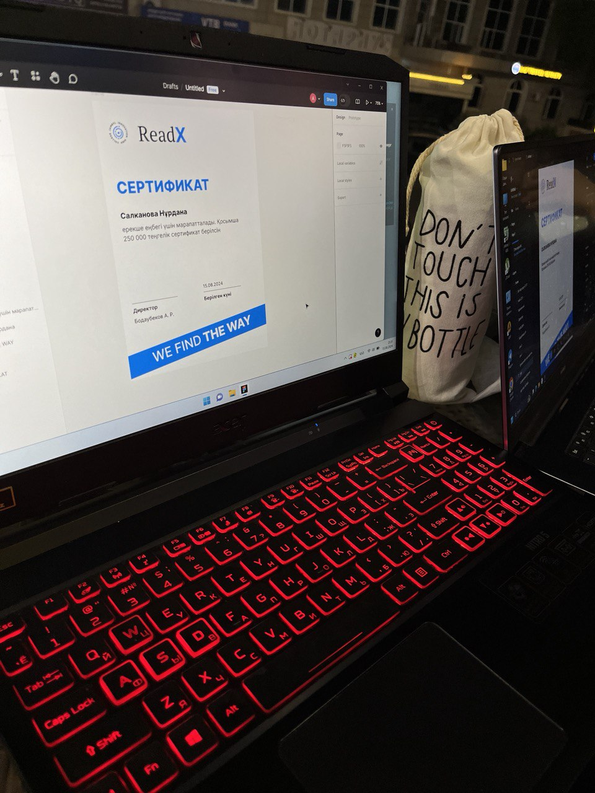

Resume Worded Recommendation System, Jan 2026
Developer
Contributed to the development of an open-source security tool to maintain data integrity in cloud environments.See more at GitHub
Co-developed a plugin to streamline cloud migration processes for small businesses, aiming to simplify the transition to the cloud.
